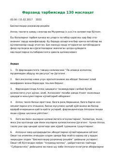

FTFarzand tarbiyalash bo'yicha foydali va amaliy tavsiyalar to'plami.
Ushbu qo'llanma farzand tarbiyasida ota-onalarga yordam beradigan amaliy va foydali maslahatlarni jamlagan. Kitobda bolalarning shaxs sifatida shakllanishi, ularga to'g'ri yo'l ko'rsatish va munosabatlarni yaxshilash bo'yicha tavsiyalar berilgan.